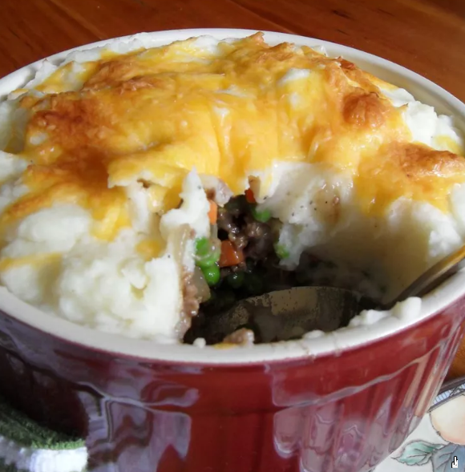

Zippy Shepherd's Pie
Gather the family round with this quick and easy shepherd's pie recipe. The meat mixture can be made ahead and frozen. You can also substitute instant potatoes for the real thing if you're in a hurry. I especially love to use white cheddar in this recipe!

Ingredients
- 1 pound potatoes, peeled and chopped
- 1 tablespoon canola oil
- 1 pound ground beef
- 1 large onion, finely chopped
- 1 red bell pepper, finely chopped
- 2 cloves garlic, finely chopped
- 1 (14 ounce) can beef broth
- 2 tablespoons ketchup
- 1 tablespoon soy sauce
- 1 tablespoon Worcestershire sauce
- 1 teaspoon mild curry powder
- 1 tablespoon cornstarch
- 2 tomatoes, coarsely chopped
- 1 (16 ounce) package frozen mixed peas and carrots
- ¼ cup milk
- 1 tablespoon butter
- 1 cup shredded extra-sharp Cheddar cheese
- salt and pepper to taste